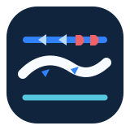
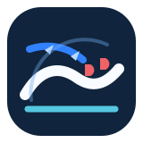
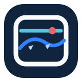
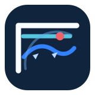

ATraverse

Traverse
A continuous front advances over a steady horizon. This is the cleanest, most emblem-like version.
Best for a company-wide mark
Frontline Forecast · Concept Lab · Finalist Families
Family one

A continuous front advances over a steady horizon. This is the cleanest, most emblem-like version.

The same front rises into an open sky. More energy, but still restrained enough for professional use.
Family two

A weather view through a rounded window. The most legible bridge between the public site and the analysis desk.

A wider forward window with a radar sweep. It feels like the moment before a forecaster makes the call.
Next decision